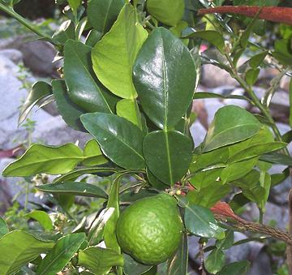

Kaffir Lime

[Makrut (Thai); La Chanh (Viet); Krauch Soeuch (Cambodia); Limau Purut
(Malay); Citrus hystrix]
Not really a lime, this fruit is native to Southeast Asia and used
particularly in Thai Cuisine. The odd double leaves are most used,
often in soups, but the rind of the fruit is used in Thai curry pastes.
The rind is also used to flavor rum in Réunion and Madagascar.
Many references say the juice is inedible but I do not find that the case,
though there isn't a lot of juice in a kaffir lime.
The shrub makes a very nice and useful decorative which can be grown
in a container, so many nurseries stock them. When fully ripe, the fruit
turns just a touch yellowish and falls from the tree but it is generally
used before that stage.
More on Citrus
Buying
: These leaves have recently become much more
available in the Asian markets here in Los Angeles They sell for about
2016 US $19.99 / pound, but a tray usually contains between 1-1/2 and
2 ounces, as not many are needed for most recipes. They may also be
available frozen.
Of course, the best solution is to buy your own tree. Those sold by
nurseries are generally on dwarfing root stock so they don't get too
big and can be grown in containers. They are evergreen and fruit well.
They should be pruned now and then to keep them producing plenty of
leaves.
Storing:
Both leaves and rinds are best stored frozen
as they are useless dried. In both cases, freeze them submerged in
water so they aren't quickly destroyed by freezer burn.
Cooking
: Each stem holds 2 leaves (see photo above). A
recipe calling for "4 leaves" means 2 stems. Recipes always use leaves,
except recipes for curry pastes which use fruit rinds. Whole leaves are
usually used in soups (I recommend crumpling them so they impart more
flavor) but stir frys and curries use them rolled up and sliced with a
sharp knife into very fine threads. The leaves are not softened by
cooking.
Substitutes
: Well, there aren't any, but if you just don't
have the leaves, use the grated zest of a regular lime - not the same
but at least it's something.
ci_kaffirz 090203 - www.clovegarden.com
©Andrew Grygus - agryg@clovegaren.com - Photos on
this page © cg1 - Linking to and
non-commercial use of this page permitted